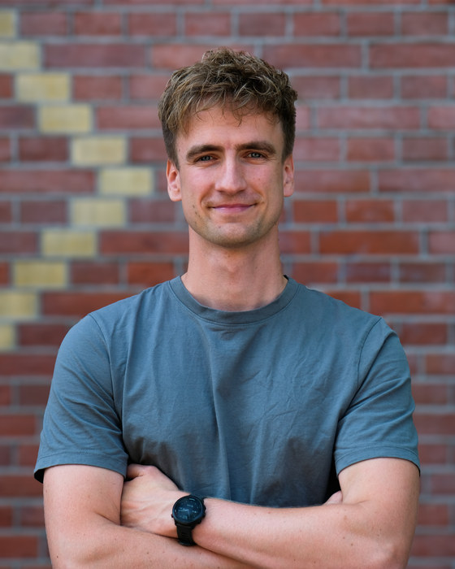

Wilmer Smilde
About
I am an H.C. Wang Assistant Professor at the Department of Mathematics at Cornell University. I completed my PhD in May 2026 at the University of Illinois Urbana–Champaign under supervision of Rui Loja Fernandes.
Before that, I did my Master's at Utrecht University.
I use techniques from Lie theory, such as Lie algebroids and Lie groupoids, to study geometric structures. With Fernandes, I developed the framework of relative algebroids to address generic classification problems and to bridge formal PDEs with the theory of Lie algebroids. I also work on linearization problems for Poisson structures around Lagrangian submanifolds.